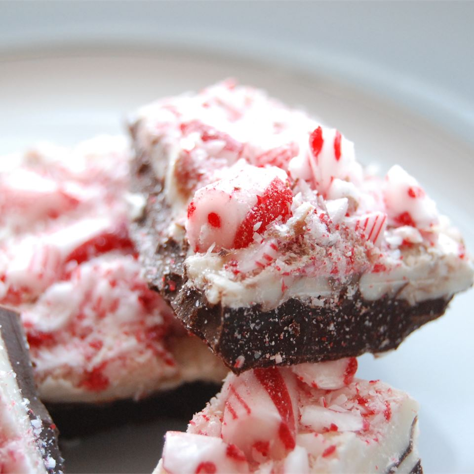

This layered peppermint bark is a delectable blend of semisweet chocolate, white chocolate, and peppermint. Semisweet, milk chocolate, or dark chocolate can be used.
Ingredients
8 ounces high-quality semisweet chocolate, broken into pieces
2 teaspoons canola oil, divided
½ teaspoon peppermint extract, divided
8 ounces high-quality white chocolate, broken into pieces
25 peppermint candies, crushed
Steps
Step 1. Lightly grease a 9x9 inch pan and line with waxed paper, smoothing out wrinkles; set aside.
Step 2. Place the semisweet chocolate and 1 teaspoon of the canola oil in the top of a double boiler over just barely simmering water, stirring frequently and scraping down the sides with a rubber spatula to avoid scorching. When the chocolate is melted, stir in 1/4 teaspoon of the peppermint extract.
Step 3. Pour the melted chocolate into the prepared pan, and spread evenly over the bottom of the pan. Sprinkle half of the crushed peppermints over the chocolate layer. Refrigerate until completely hardened, about 1 hour.
Step 4. Place the white chocolate and the remaining 1 teaspoon canola oil in the top of a double boiler over just barely simmering water, stirring frequently and scraping down the sides with a rubber spatula to avoid scorching. When the chocolate is melted, stir in the remaining 1/4 teaspoon peppermint extract.
Step 5. Pour the white chocolate directly over the semisweet chocolate layer; spread evenly. Sprinkle the remaining crushed candy over the top and gently press in. Refrigerate until completely hardened. Remove from pan; break into small pieces to serve.
Nutrition Facts
Per Serving: 90 calories; protein 1.5g; carbohydrates 30.3g; fat 7.7g; cholesterol 2.4mg; sodium 17.2mg.